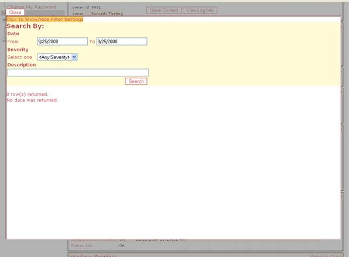

| Subsystem ID | External Source |
| Root System ID | Lab Results Integration |
| System Type | Content |
| Initial Version Dependencies |
|
EncounterPRO EPIE Labcorp Message handler receives the vendor lab results directly to EPIE thru a VPN connection between EHR Inc and Labcorp servers. It is then transformed into JMJDocument XML and downloaded by local EncounterPRO application. All the change requests and version managements for labcorp are handled in EPIE interface and the configuration and route definitions are managed thru CMA.
Initially EHR Inc. was told to do a dial-up to download the customer messages and so there is handful of clients in dial-up to download the results and processed thru EPIE. Go to CMA under Labcorp and see the list of clients in dial-up mode by clicking the Transport. See the screen shot below.
Transport Protocol
Labcorp send the lab results to EHR Inc. FTP server thru a secured VPN channel. In this model EHR directly works with the labcorp in order to establish the secured connection. In this mode of transport all the messages goes thru EHR Clearing house where this requires labcorp supply their unique Customer Site Identifier in order to distribute the messages to right customers. EHR Inc. already established a secured LAN-to-LAN VPN connection between EHR server (EPIE machine) and Labcorp networks.
Preparations
1. Go to CMA and click on Interface Services and select the interface service type 'Lab Results'. If the interface service you are looking for is in the 'Pending' list then it is not ready yet to install at Customers. If you could not find the interface service or that is not completed yet then contact EHR Development to find out the status on this.
2. Check to make sure the EHR Client is in the recommended EncounterPRO versions above.
3. Contact Labcorp project manager for the Customer so that EHR Inc. and Labcorp team work together in enabling the customer result messages from Labcorp thru VPN. Since all the customer lab results come thru single folder it is important to identify the Labcorp 'Customer Site Identifier' for the customer you are working with. Labcorp assigns 'TEST CSID' and 'PROD CSID' and get these two from Labcorp rep in order to successfully subscribe the labcorp interface.
Installation / Configuration (@EPIE thru CMA)
- Subscribe the interface. (Epie registration)
- Create the EPIE user account (Epie Account) for the EHR Client. These credentials authorize the EHR client to communicate with EPIE to exchange messages.
Training Schedule
Once the subscription is successfully completed schedule a training session and start working on the Installation / Configuration steps couple days prior to training session to make sure it is working.
Installation / Configuration (@Customer)
-
Setup EpIE Credentials.(Epie installation)
- Install the Lab Results Interface by going into EPROServer DbMaintenance Utilities->Enable LabResults Interface.
- Test the EPIE connectivity by sending test messages from CMA to EHR Client. See the screen shot below.

- Test the end-end connectivity by requesting the labcorp to send sample lab results into the folder and make sure they showed up at the Customer Page at CMA. If the message did not come thru then click the 'viewlog' to see if any errors were found. See the screen shot below.

Once the training is successfully completed and the live interface is activated then follow up with client to make sure the results are coming thru and posting to EncounterPRO successfully. Also monitor the EPIE routes in CMA for this interface to make sure the message flow is continuous and no errors.